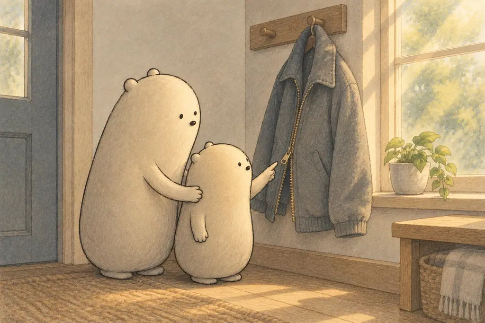
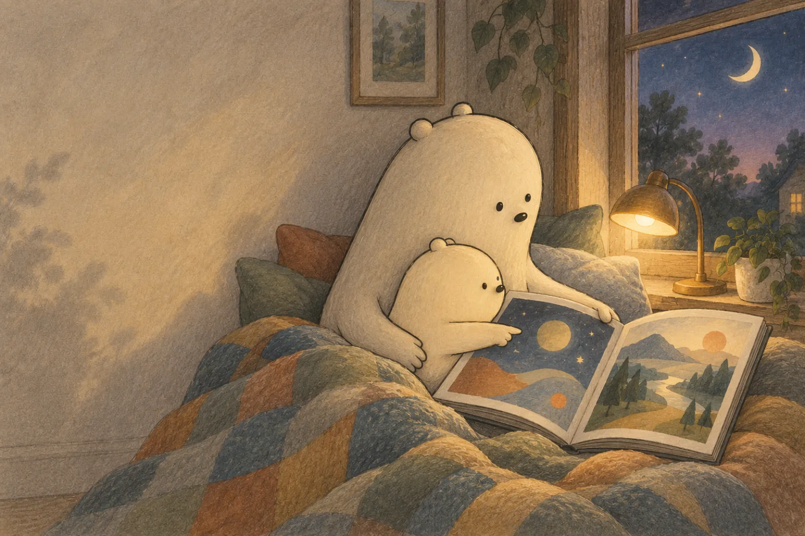
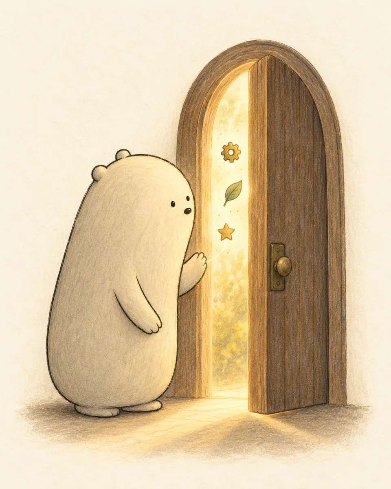
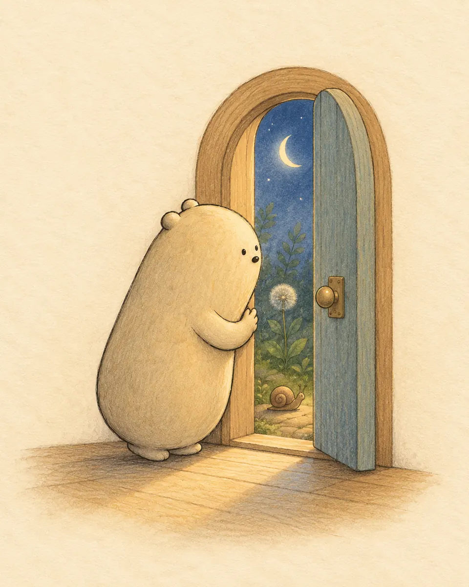
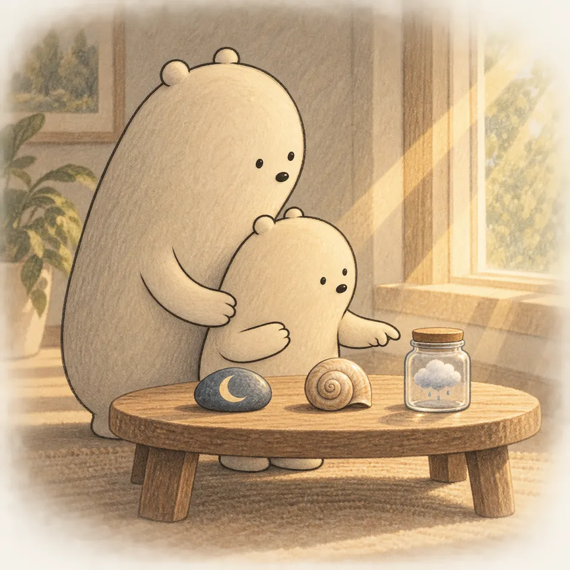
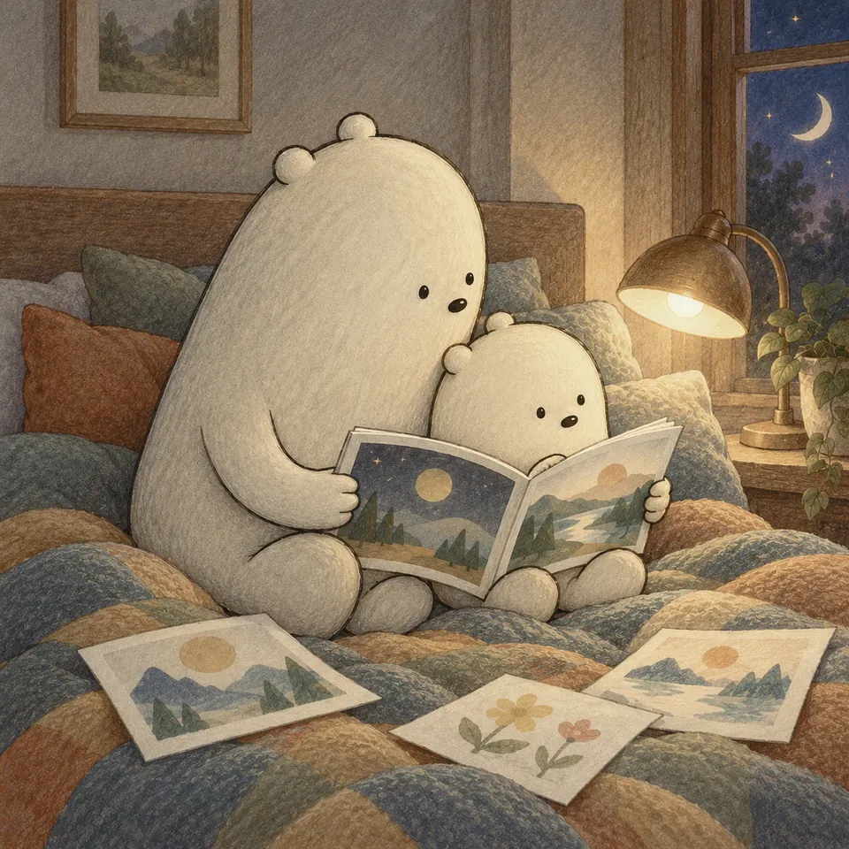
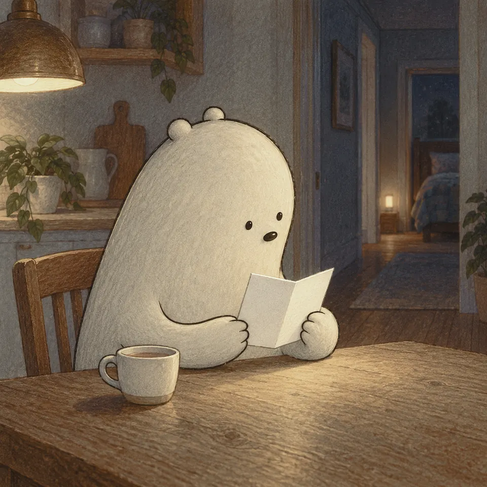

Latest pack an example of one day

How a Sidewalk Is Made and How It Works
- Story
- Why
- Activities
- PDFs
Wonder TogetherWonder Daily
Printable packs

For parents
Wonder Daily packs are made for one day each. A pack has a story to read, a few problems, and something to do or make. Print the pages, or open the pack on a tablet. You sit with your child while they work.
Sign-up statusLatest pack an example of one day

More than one child
Bookmark one family page. It has two doors, one for Big Wonderer and one for Little Wonderer.
Family page bookmark it once


Each door opens the latest pack, past packs, and PDFs to print.
How it works

Each pack is built around one everyday question. The story, math, and activities all come back to it.

Read the story aloud, then work through the problems and the activity. Print the pages, or open the pack on a tablet.

Big Wonderer’s pack comes with a separate answer key for grown-ups. Print it apart from your child’s pages.
Sign-up